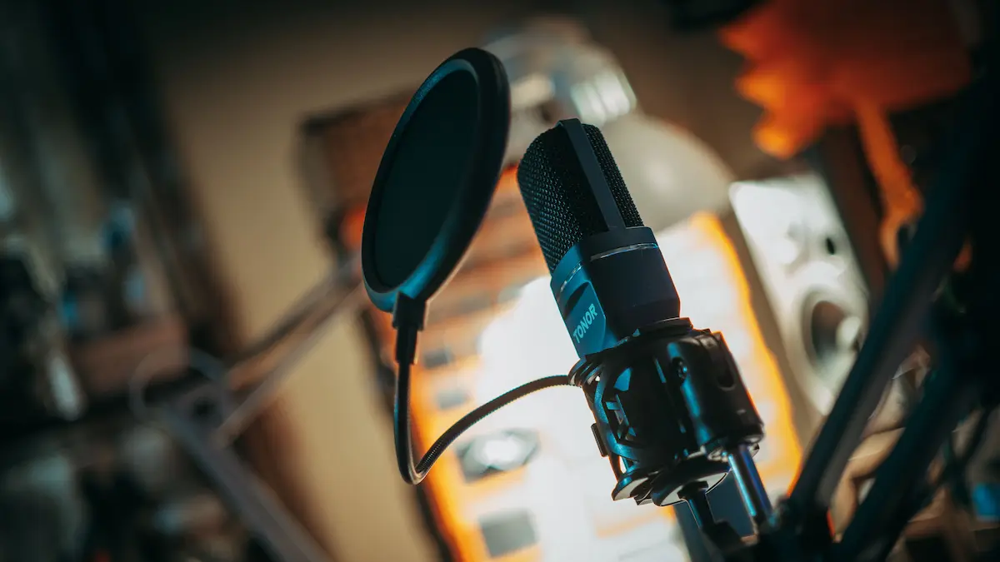
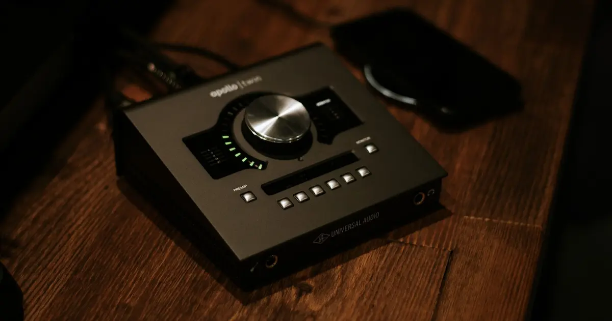
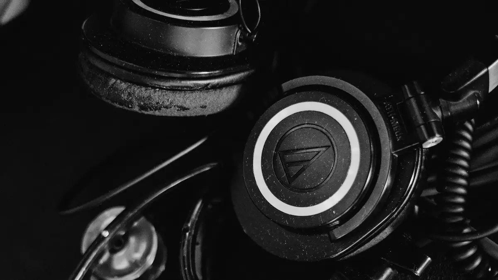

Proceso de Grabación
La captura sonora es el punto de partida de toda producción.
Consiste en registrar la señal acústica de la forma más fiel posible para su posterior tratamiento digital.
Micrófonos

La herramienta principal de captación. Se dividen principalmente en micrófonos de condensador
(máxima sensibilidad y detalle para voces e instrumentos acústicos) y dinámicos
(resistentes a altos niveles de presión sonora e ideales para fuentes potentes).
Interfaces de Audio

El núcleo técnico del home studio. Su función es preamplificar la señal débil del micrófono
y realizar la conversión de analógico a digital (ADC) sin latencia perceptible.
Monitoreo Directo

La capacidad de escuchar lo que se está grabando en tiempo real mediante auriculares cerrados, evitando acoples con el micrófono.